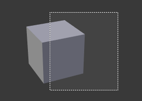

3D 视图–颖心欢欣 翻译¶
To be able to work in the three dimensional space that Blender uses, you must be able to change your viewpoint as well as the viewing direction of the scene. While we will describe the 3D View editor, most of the other windows have similar functions. For example, it is possible to translate and zoom a Properties editor and its panels.
小技巧
鼠标按键和数字键盘
If you have a mouse with less than three buttons or a keyboard without numpad, see the Keyboard and Mouse page of the manual to learn how to use them with Blender.
透视图与正交视图¶
参考
Numpad5Each 3D View supports two different types of projection. These are demonstrated in the Fig. below.
{kind=link}
{kind=link}
我们的眼睛习惯透视视觉，因为远处的物体看起来要小一些。 正交投影则看起来有一点古怪，因为不管远近，物体看起来都是同样大小。正交视图就像是从无限远处看场景。然而，正交视图却是非常有用的（在Blender和其它3D应用程序中正交视图都是默认的），因为它提供了对场景更“技术”的视觉，让它易于绘制和判断比例。
选项¶
摄像机视图的演示
To change the projection for a 3D View, choose the
or the menu entry.
The Numpad5 shortcut toggles between the two modes.
Changing the projection for a 3D View does not affect the way the scene will be rendered.
Rendering is in perspective by default. If you need to create an orthographic rendering,
select the camera, go to the Camera tab and press the
Orthographic button in the Lens panel.
The menu entry sets the 3D View to camera mode Numpad0.
The scene is then displayed as it will be rendered later (see Fig. 摄像机视图的演示).
The rendered image will contain everything within the orange dotted line.
Zooming in and out is possible in this view, but to change the viewpoint,
you have to move or rotate the camera.
参见
- Render perspectives
: doc: 相机视图
: ref:’ 相机剪切<camera-clipping>’</camera-clipping>
: 词:’ <projection>’</projection>相机预测
旋转视图¶
参考
MMB, Numpad2, Numpad4, Numpad6,
Numpad8, Ctrl-Alt-WheelA 3D View’s View menu.
Blender默认提供四种默认查看方向: 侧视图, 前视图, 顶视图 和 摄像机视图 . Blender 采用直角 “卡迪尔” 坐标系中Z轴指向上. “侧面” 对应于沿着 X 轴正负方向, “前” 沿着Y 轴, 和 “顶” 沿着 Z轴.
选项¶
You can select the viewing direction for a 3D View with the View menu entries,
or by pressing the hotkeys Numpad3 for “side”, Numpad1 for “front”,
Numpad7 for “top”. You can select the opposite directions if you hold
Ctrl while using the same numpad shortcuts.
Finally Numpad0 gives access to the “camera” viewpoint.
Apart from these four default directions, the view can be rotated to any angle you wish.
Click and drag MMB on the viewport’s area.
If you start in the middle of the area and move up and down or left and right,
the view is rotated around the middle of the area. Alternatively,
if the Emulate 3 button mouse option is select in the User Preferences you can press and hold
Alt while dragging LMB in the viewport’s area.
以不连续的改变视角, 使用快捷键 Numpad8 和 Numpad2
(相当于从任意视点垂直点击 MMB 拖动),
或者使用快捷键 Numpad4 和 Numpad6 (或 Ctrl-Alt-Wheel)
从你当前的视点根据全局坐标 Z 轴去旋转场景.
注解
快捷键
Remember that most hotkeys affect the active area (the one that has focus), so check that the mouse cursor is in the area you want to work in before your use the hotkeys.
平移视图¶
参考
Shift-MMB , Ctrl-Numpad2, Ctrl-Numpad4,
Ctrl-Numpad6, Ctrl-Numpad8, Shift-Alt-LMBTo pan the view, hold down Shift and drag MMB in the 3D View.
For discrete steps, use the hotkeys Ctrl-Numpad8, Ctrl-Numpad2,
Ctrl-Numpad4 and Ctrl-Numpad6 as with rotating (note:
you can replace Ctrl by Shift).
For those without a middle mouse button,
you can hold Shift-Alt while dragging with LMB.
缩放视图¶
参考
Ctrl-MMB, Wheel, NumpadPlus, NumpadMinusYou can zoom in and out by holding down Ctrl and dragging MMB.
The hotkeys are NumpadPlus and NumpadMinus.
The sub-menu holds these functions too as well.
Refer to the 3D View’s View menu image above for more information.
If you have a wheel mouse, you can perform all of the actions in the 3D View that you
would do with NumpadPlus and NumpadMinus by rotating the Wheel.
To zoom a Properties editor,
hold Ctrl-MMB and move your mouse up and down.
提示
如果你转晕了
If you get lost in 3D space, which is not uncommon, two hotkeys will help you:
Home changes the view so that you can see all objects ,
while NumpadPeriod zooms the view to the currently selected objects when in perspective mode
.
缩放区域¶
参考
Shift-BThe Zoom Border tool allows you to specify a rectangular region and zoom in so that the region fills the 3D View.
你可以通过 视图 访问菜单或者快捷键 Shift-B,
点击 LMB 并拖动 矩形进行放大.
另外，你可以使用 MMB 进行缩小.
滑动视图¶
参考
Ctrl-Shift-MMBIn most cases its sufficient to zoom the view to get a closer look at something, however, you may notice that at a certain point you cannot zoom any closer.
This is because Blender stores a view-point thats used for orbiting and zooming. It works well in many cases, but sometimes you want to move the view-point to a different place. This is what Dolly supports, allowing you to transport the view from one place to another.
你可以按着 Ctrl-Shift 并拖动
MMB 进行视图推拉.
对齐视图¶
对齐视图¶
这些选项能让你 在不同的视角对齐方向. 它们可以在 视图菜单 中找到
- 对齐到选定象菜单
These options align your view with specified local axes of the selected object, bone or in Edit Mode, with the normal of the selected face.
按着
Shift同时使用 小键盘 区设置视图方向.- Center Cursor and View All
Shift-C- moves the cursor back to the origin and zooms in/out so that you can see everything in your scene.
- 摄像机对齐到视角,
Ctrl-Alt-Numpad0- Gives your active camera the current viewpoint.
- 查看所选,
NumpadPeriod将视图焦点移动到当前选中 对象的中心,并放大填满屏幕。
- 视图中心移动到游标,
Alt-Home- Centers view to 3D-cursor.
- 视图选择
- See above.
- 查看所有
Home 视口缩放到显示当前帧场景中的所有可见对象.
Local View¶

Global View. |

Local View. |
You can toggle Local View by selecting the option
from the View Menu or using the shortcut NumpadSlash.
Local view isolates the selected object or objects,
so that they are the only ones visible in the viewport.
This is useful for working on objects that are obscured by other ones, or have heavy geometry.
Press NumpadSlash to exit Local View.
This allow you to focus on a specific object without others getting in your way, and can be used to speed up viewport performance in heavy scenes.
注解
These notes cover changes in local-view which are not immediately obvious.
- 3D Cursor
- In local-view the 3D cursor is not locked to the scene. Instead, each view has an independent cursor location.
- Layers
Local-view bypasses layers, using only the selected objects when entering local-view. Although new objects may be added while in local-view.
Its also possible to send objects out of local view, using , which can be useful to further isolate a selection.
- Preview Renders
- Preview renders will still use lamps outside the local-view, this allows you to quickly render previews without having to remember to select all lamps when entering local-view.
四格视图¶
参考
Ctrl-Alt-QToggling Quad View will split the 3D View into four views: 3 Orthographic “side views” and a Camera/User View. This view will allow you to instantly see your model from a number of view points. In this arrangement, you can zoom and pan each view independently but you cannot rotate the view.
注解
Quad View is different from splitting the area and aligning the view manually. In Quad View, the four views are still part of a single 3D View. So they share the same draw options and layers.
Quad View.
选项¶
These options can be found in .
- Lock
如果你想成为能够旋转每个视图，您可以取消勾选*锁定* 选项。
- Box
- Syncs view position between side views.
- Clip
- Clip objects based on what is visible in other side views.
视图裁剪区域¶
参考
Alt-B

Selecting a region. |

View rotated. |
{kind=link}
{kind=link}
To assist in the process of working with complex models and scenes, you can set the view clipping to visually isolate what you are working on.
Once clipping is used, you will only see whats inside a volume you have defined. Tools such as paint, sculpt, selection, transform-snapping, etc. will also ignore geometry outside the clipping bounds.
Once activated with Alt-B, you have to draw a rectangle with the mouse,
in the wanted 3D View. The created clipping volume will then be:
- A right-angled parallelepiped (of infinite length) if your view is orthographic.
矩形为基础的金字塔（无限高度）如果你的视图是透视。使用MMB旋转视图，你会看到只有什么是金字塔形的体积内可见。所有的编辑工具，还是作为正常的，但只在锥体体积剪裁。
取消这裁剪, 再按一次 Alt-B 。
例子¶
在 区域/体积 裁剪 图像示出了使用剪取工具与立方体的一个例子。开始通过使用 Alt-B (图像的左上角).这将产生一个虚十字光标r.点击 LMB 并拖动到右上角显示一个矩形区域.现在的区域被定义 并且裁剪应用于指定在三维空间中的区域.注意立方体的一部分现在是不可见或裁剪 U使用 MMB t旋转视图你会看到只有金字塔形的区域内可见。只有在金字塔形裁剪体积，所有的编辑工具仍然功能正常,.
暗灰色区域是剪切体积本身。
一旦限幅被停用另一个 Alt-B,
所有的三维空间将再次变得可见.
步行/飞模式¶
当你要放置视图，通常你就如上所述。
However, there are cases in which you really prefer to just navigate your model, especially if it is very large, like environments or some architectural model. In these cases viewing the model in perspective mode has limitations, for example after zooming a lot of panning is extremely uncomfortable and difficult, or you apparently cannot move the camera any nearer. As an example, try to navigate to a very distant object in the view with traditional methods (explained above) and see what you can get.
步行/飞模式与您移动、 平移、 倾斜，和小车相机周围没有任何的这些限制。
视图浏览
In the User Preferences editor select the navigation mode you want to use as default when invoking the View Navigation operator. Alternatively you can call the individual modes from the View Navigation menu.
注解
This mode actually moves the camera used by the view. This means that when you are in camera view, it moves the active camera, which is another way to place and aim it.
步行模式¶
参考
Shift-F激活鼠标指针将动议在视图的中心和交叉的标记会出现......
This navigation mode behaves similar to the first person navigation system available in most 3D world games nowadays.
It works with a combination of keyboard keys W, A, S, D and mouse movement.
By default the navigation is in the “free” mode, with no gravity influence.
You can toggle between gravity and free mode during the navigation Tab.
To move to places more quickly you can teleport Spacebar around your scene.
If there is an object in front of the walk cross/aim you will move in that direction until you reach the point
(offset by the camera height value set in the User Preferences).
快捷键¶
移动鼠标左/右平移视图左/右或移动它向上/向下倾斜视图向上/向下。
- Move the camera forward/backward
W,S. - Strafe left/right
A,D. - Jump
V- only in gravity mode. - Move up and down
Q,E- only in free mode. - Alternate between free and gravity modes
Tab. - Change the movement speed:
-
WheelUporNumpadPlusto increase the movement speed for this open session. -WheelDownor toNumpadMinusto decrease the movement speed for this open session. -Shift(hold) - to speed up the movement temporarily. -Alt(hold) - to slow down the movement temporarily.
当你满意新视图，请单击: 大骨节病: ‘LMB’ 来确认。万一你想要从你开始回去，按: 大骨节病: Esc 或: 大骨节病: ‘人民币’，像往常一样。
If the defaults values (speed, mouse sensitivity, ...) need adjustments for your project, in the User Preferences you can select a few options for the navigation system:
飞行模式¶
参考
Shift-F激活鼠标指针将动议在视图的中心和一个平方的标记会出现 — — 一种平视显示器...
飞行模式的选项中有一些受鼠标指针相对于视图本身，中心的位置，围绕着这个中心的平方的标记提供了一种可以用来放置鼠标对它没有影响视图上的”安全区”。更多的是你把鼠标指针移开标记，越你泛，或跟踪等。
快捷键¶
移动鼠标左/右平移视图左/右或移动它向上/向下倾斜视图向上/向下。
Move the view forward/backward: -
WheelUporNumpadPlusto accelerate the movement forward. -WheelDownor toNumpadMinusto accelerate the movement backward.So if the view is already moving forward,
WheelDown,NumpadMinuswill eventually stop it and then move it backward, etc.拖: 大骨节病: ‘MMB’ 向多莉。在这种情况下视图可以横向轴上移动其本地一刻你拖动鼠标 — — 很明显，分别上的左，右，向上下拖动左/右/上下使视图多莉。
当你满意新视图，请单击: 大骨节病: ‘LMB’ 来确认。万一你想要从你开始回去，按: 大骨节病: Esc 或: 大骨节病: ‘人民币’，像往常一样。